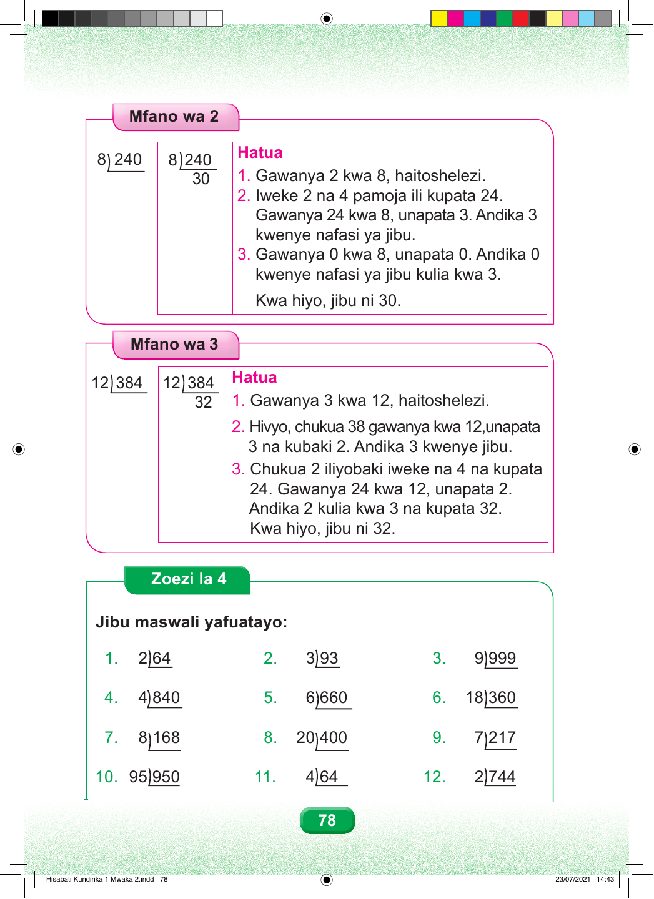

Mfano wa 2 Hatua 8 240 8 240 30 1. Gawanya 2 kwa 8, haitoshelezi. 2. Iweke 2 na 4 pamoja ili kupata 24. Gawanya 24 kwa 8, unapata 3. Andika 3 kwenye nafasi ya jibu. 3. Gawanya 0 kwa 8, unapata 0. Andika 0 kwenye nafasi ya jibu kulia kwa 3. Kwa hiyo, jibu ni 30. Mfano wa 3 Hatua 12 384 12 384 32 1. Gawanya 3 kwa 12, haitoshelezi. 2. Hivyo, chukua 38 gawanya kwa 12,unapata 3 na kubaki 2. Andika 3 kwenye jibu. 3. Chukua 2 iliyobaki iweke na 4 na kupata 24. Gawanya 24 kwa 12, unapata 2. Andika 2 kulia kwa 3 na kupata 32. Kwa hiyo, jibu ni 32. Zoezi la 4 Jibu maswali yafuatayo: 1. 2 64 2. 3 93 3. 9 999 4. 4 840 5. 6 660 6. 18 360 7. 8 168 8. 20 400 9. 7 217 10. 95 950 11. 4 64 12. 2 744 78 Hisabati Kundirika 1 Mwaka 2.indd 78 23/07/2021 14:43